six live sessions over two weeks. you walk out actually getting how this works - the engine you never touch, the three dials you do - with my whole setup on your machine and one real thing you built.
these land in my inbox every week - the written ones up top and below, the video ones rolling through the middle. hover any to get up close (the videos unmute when you do).
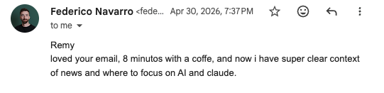
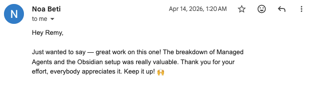
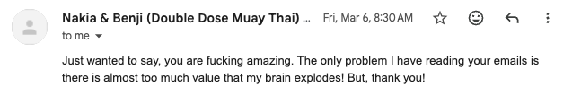
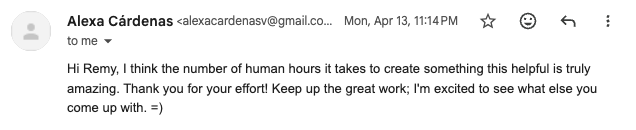
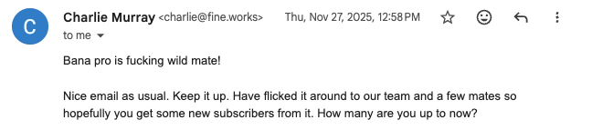
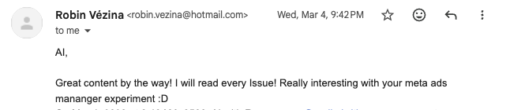
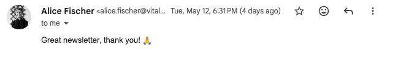
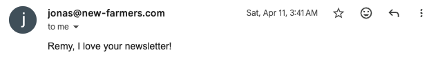
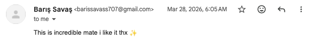
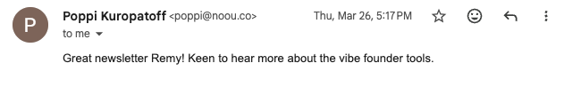
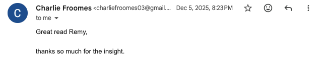
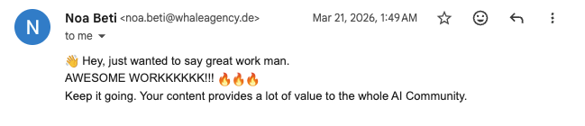
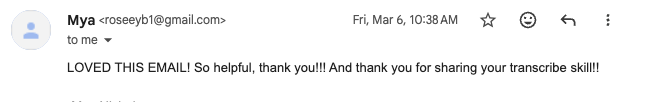
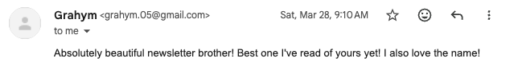
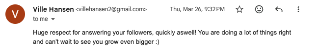
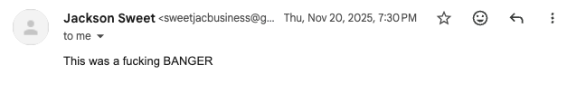
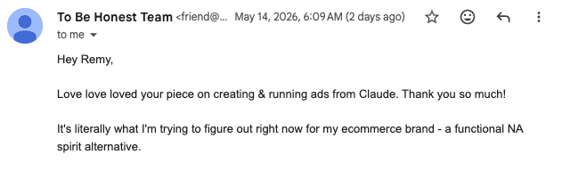
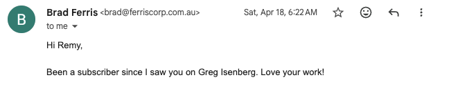
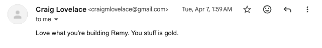
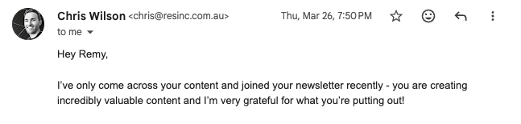
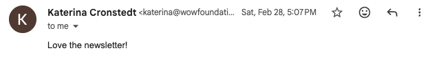
you've watched the breakdowns, saved the threads, poked at ChatGPT... and almost none of it made it into how you actually work. that gap - between watching AI and building it into your day - is where everyone quietly gives up.
you know it matters, but you can't get it into your work. saved every thread, watched every video, and none of it made the jump.
hours gone on content, admin, support - the boring 80% that doesn't need a human anywhere near it.
felt gimmicky, no real system behind it, so you shrugged and went back to doing it all by hand.
the magic was never the tool. it's the setup - and almost nobody teaches the setup. that's the whole gap this course closes.
The AI Course teaches you to build your own AI operating system - a setup that knows your business and does real work for you. foundations first, then my entire setup on your laptop, then one real, working thing we build with it, live. no word of a lie, i'm 5-10x more productive than i used to be.
the engine you never touch. the three dials you do.
the LLM. the reasoning. the same brilliant brain whether you're a beginner or a pro. you don't tune it.
how an agent actually works. it looks at what's in front of it, decides one next step, does it, then looks again.
over and over, till the job's done
so why are some people's agents incredible and most people's useless? not the engine. the three dials.
your business info, your voice, your memory. fed in every time it works, so it answers like it works for you - not like a stranger.
your apps, your email, your browser, the web. the logins that turn advice into work actually done.
your SOPs, packaged once and reused forever. nail a job the right way, then never lose that work again.
treat it like a hire. a raw agent is the smartest, hardest-working person you'll ever meet - infinite bandwidth, costs about a hundred quid a month. but on day one it knows nothing about your business, has none of your logins, and doesn't know how you like things done. so you onboard it. context, tools, skills. that's the whole job - and the whole back half of this course.
as seen on
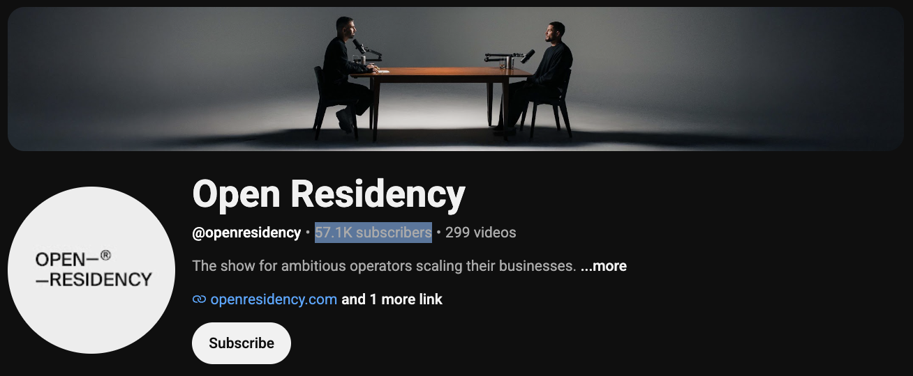
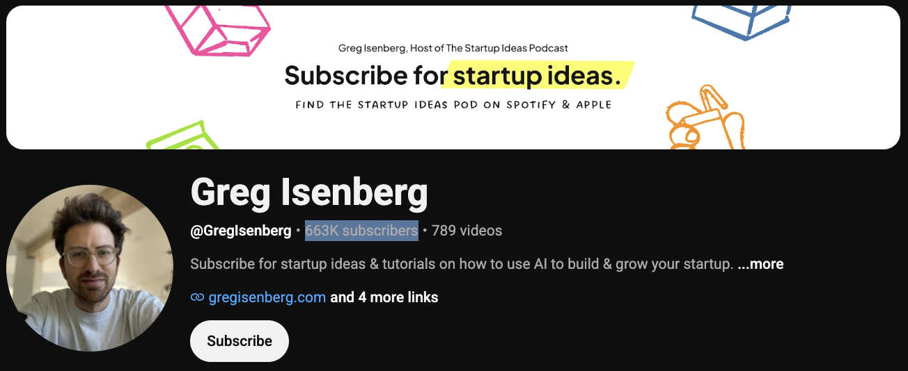
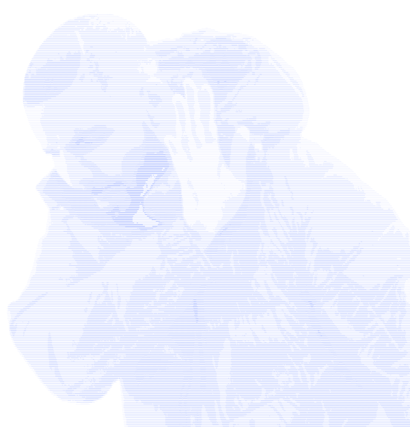
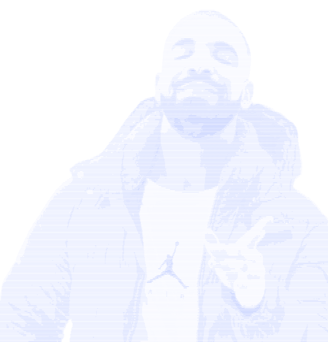
six sessions, each with one deliverable that has to land. tap any to see what you walk out with.
deliverable: you understand exactly how an agent works - and my entire setup is installed and running on your laptop.
you walk out with
deliverable: context files that know your business cold - built by letting it interview you.
you walk out with
deliverable: a memory that gets sharper every time you correct it.
you walk out with
deliverable: your system wired into the apps and data your business actually runs on.
you walk out with
deliverable: your own custom skills, built from scratch.
you walk out with
deliverable: one real, working build that uses your context, your tools and your skills - shipped.
you walk out with
and the literacy under all of it. so when the next thing drops - OpenClaw, Hermes, you name it - you've already got it.
when the cohort wraps you move into the alumni room - the same private space, except now it's ongoing. and your first month is on me ($147 value).
we pick a real thing and build it together - new skill, new agent, new automation, on a regular cadence.
the wins, the screenshots, the "how'd you do that", the help when you're stuck. same level as you, all pushing.
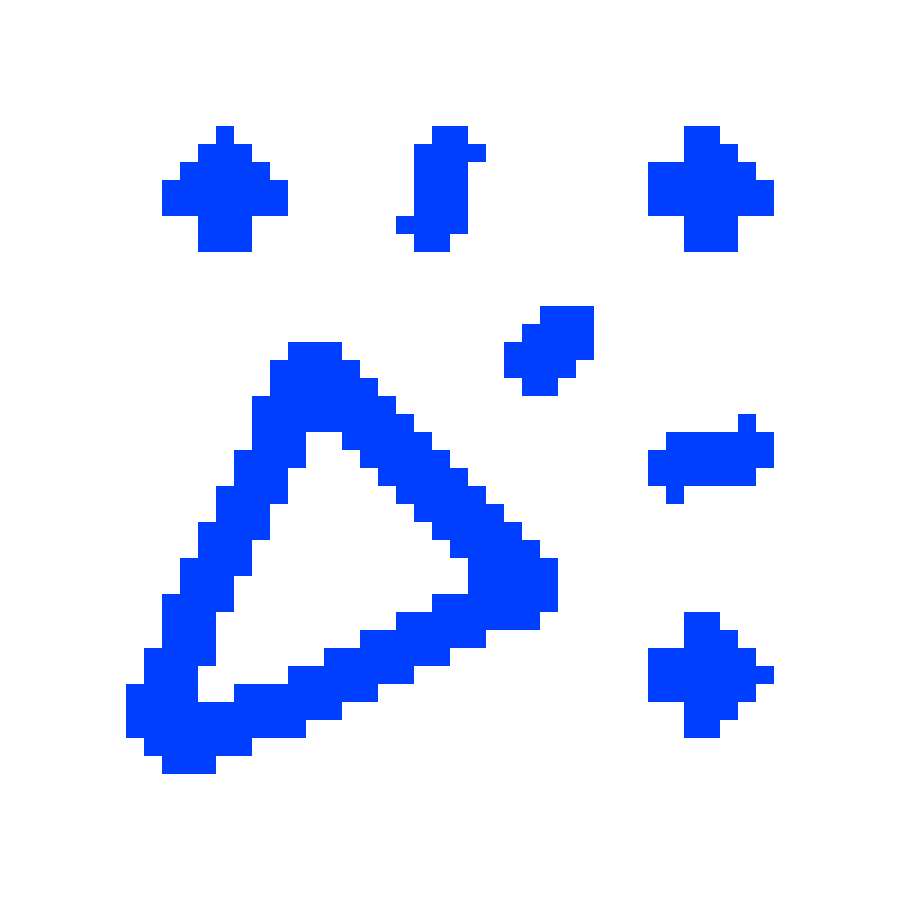
new tools, new harnesses, worked through together, so you're never sat waiting.
quick and honest, so the right people are in the room.
i don't have a technical bone in my body. my background's marketing. and that's rather the point.
i built a full AI operating system - an extension of me as a founder. it runs my work, automates the boring grunt of my week, and no word of a lie, i'm 5-10x more productive than i used to be. then i set the same thing up for founders like Noah, Hudson and Alfie, and watched the same penny drop for them.
here's the honest version of why most people try AI, get junk, and quit: a raw agent out of the box is mediocre. the magic was never the agent - it's the setup, and almost nobody teaches the setup. so i learned it the way you're about to, as a normal person who just needed it to work.
it lives on Claude Code, but the point was never the harness - it's the understanding. get that, and whatever drops next you pick up without me. AI doesn't replace you. it amplifies you - your judgment, your taste, your vision. you stay the one with the standard. it just does the heavy lifting.
that's the whole thing i want to hand you. come build it with me.
real people, real setups. their words going in here as the cohort ships its results.
"[ placeholder - Noah's real words to drop in ]"
10x'd the busywork off his plate"[ placeholder - Hudson's real words to drop in ]"
hours back every week"[ placeholder - Alfie's real words to drop in ]"
shipped the thing he kept parkingthe ai course · july cohort
pay in full, or 8 × $275/week. and your first month in the alumni community is free ($147 value).
turn up to the live calls and do the homework. if you've done that and the course didn't deliver, email me and i'll refund you in full. you take the risk off the table, i'll bring the goods.
let's have them out, honestly.
i'm not either - my background's marketing, and i learned this exactly the way you're about to. if you can describe your business in plain English, you're technical enough. the one real bar is basic computer fluency, not code.
you're not too busy to learn this, you're too busy because you haven't. the whole point is handing the boring 80% of your week off to a machine. it's six 90-minute sessions over two weeks, and they're recorded if you miss one.
course it didn't - a raw agent out of the box is mediocre. the magic's in the setup, and that's the bit nobody taught you. that's literally what we fix, foundations first, with my whole machine on yours.
never touched an agent? you're bang in the middle of who this is built for. we go slower on the why, click by click, and the first ten minutes of session one is setup, so nobody gets left behind. recordings mean you can always run it back slower.
one skill that saves you a few hours a week pays this back inside a month - and you keep the machine forever, not a video you'll never rewatch. there's an 8 × $275 weekly plan if that's easier, and a refund if you show up, do the work and it doesn't land.
no - because you're learning the model, not a tool. the engine you never touch, the three dials you do. it lives on Claude Code but opens with Codex or whatever drops next month. when the next thing lands, you've already got it.
"but is it safe?" you secure an AI employee the same way you'd secure a human one - except this one's more controllable than any human you'll ever hire. it only gets the keys you hand it (no payments access means it literally can't move money), reading is free but anything irreversible is gated so it drafts and you send, every action's logged, and one click cuts off all its access. we cover this properly in session one.
those who've got AI doing real work for them, and those still reading about it. you already feel which way the wind's blowing, or you wouldn't be on this page.
enrollment closes (placeholder date)
am & pm session times, timezones catered for · dates to be confirmed
every session's recorded, so you run it back anytime. and the 30 minutes of open Q&A each session means whatever you got stuck on gets sorted live next time. you won't fall behind.
six sessions across two weeks, three a week, all at 6pm ET. exact dates are being confirmed - they'll be locked in your welcome email.
not technical at all - no coding, ever. the one real bar is basic computer fluency: managing files, taking a screenshot, installing an app, finding your way around your own machine. if you can describe your business in plain English, you're in.
three free installs, no wiring needed: Claude Code, VS Code (the link i send brings the extensions with it), and Whisper Flow so you can talk to it instead of typing. we do the actual setup live in session one.
no. you'll finally get the model properly - the bit most people skip - then get pushed to drive solo, audit it, harden it, wire more in. every session ships a full walkthrough and a faster reference side by side, so you take whichever pace you need.
yep - 8 × $275 a week. or pay in full at the $1,497 early-bird price and you're done.
show up to the live calls, do the homework, and if it didn't deliver, email me for a full refund. simple as that.
you move straight into the alumni community, where we run live builds every week or two. the course gives you the foundations and your first build. the community is where you keep going - and your first month's on me.
stop reading about it. go build it.
six live sessions, my whole setup on your machine, and one real thing you ship - with a room of people building right next to you.